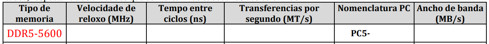
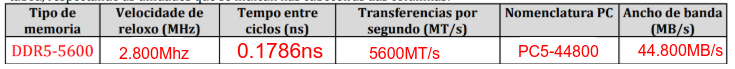
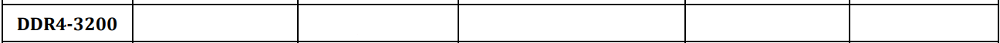
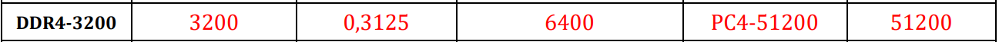

Enunciado: Un usuario ten dúas memórias disponibles para compra:
Calcúa a latencia real en nanosegundos para ambas e indica cal é máis rápida en termos reais.
Solución:
Opción A - DDR4-3600 CL16: $$\text{Latencia} = \frac{16}{3600} \times 1000 = 4.44 \text{ ns}$$
Opción B - DDR5-6000 CL30: $$\text{Latencia} = \frac{30}{6000} \times 1000 = 5 \text{ ns}$$
Conclusión: A opción A (DDR4-3600) ten menor latencia real, pero a diferenza é pequena (0.56 ns). DDR5 compensa con maior ancuro de banda.
Enunciado: Calcula o ancuro de banda total para as seguintes configuracións:
a) 2 × 8GB DDR5-5600 en Dual Channel b) 1 × 16GB DDR4-3200 en Single Channel
Solución:
a) DDR5-5600 Dual Channel:
$$\text{Ancuro Banda} = 5600 \times 8 \times 2 = 89.6 \text{ GB/s}$$
b) DDR4-3200 Single Channel:
$$\text{Ancuro Banda} = 3200 \times 8 \times 1 = 25.6 \text{ GB/s}$$
Diferenza: Dual Channel DDR5 ten 3.5× maior ancuro de banda
Enunciado: Calcula o tempo requirido para transferir un fichero de 500 MB usando:
a) DDR4-3200 Single Channel b) DDR4-3200 Dual Channel c) DDR5-6000 Dual Channel
Fórmula: Tempo (ms) = Tamaño (MB) / Ancuro Banda (GB/s) × 1000
Solución:
a) DDR4-3200 Single Channel (25.6 GB/s): $$T = \frac{500}{25.6} = 19.53 \text{ ms}$$
b) DDR4-3200 Dual Channel (51.2 GB/s): $$T = \frac{500}{51.2} = 9.77 \text{ ms}$$
c) DDR5-6000 Dual Channel (96 GB/s): $$T = \frac{500}{96} = 5.21 \text{ ms}$$
Ganancia de Dual Channel vs Single: 2× máis rápido
Enunciado: Calcula os seguintes datos

Solución:

Enunciado: Calcula os seguintes datos

Solución:

Enunciado: Dado o seguinte elemento de placa base con 4 slots, identifica:
Placa Base AM5 (AMD Ryzen 7000+)
[Slot 1] [Slot 2] [Slot 3] [Slot 4]
| | | |
A1 B1 A2 B2
a) Tipo de memoria soportado: ¿DDR4 ou DDR5? b) Configuración recomendada DUAL CHANNEL: ¿Cales slots usar? c) Se queres 32GB en máximo rendemento, ¿cantas DIMM necesitas e de que capacidade?
Solución:
a) Tipo: DDR5 (Socket AM5 é obrigatorio DDR5)
b) Dual Channel: Usa slots A1 + A2 (ou B1 + B2)
c) 32GB máximo rendemento:
Enunciado: Observa a seguinte especificación de memoria:
G.SKILL Trident Z5 RGB
Modelo: F5-6000J3036G16GX2
DDR5-6000 CL30-36-36-96
Voltage: 1.25V
Capacity: 32GB (2x16GB)
Identifica:
Solución:
Escenario: O usuario monta un PC novo:
Problema: Ao conectar a fonte e premer Power, o ordenador fai beep unha soa nota longa e repítese cada 2 segundos. Pantalla en negro.
Preguntas:
a) ¿Que significa o códizo de beep "1 longo"?
b) ¿Cales son as causas máis probables (en orde de probabilidade)?
c) Lista 5 pasos de diagnóstico en orde, con accións específicas.
Solución:
a) Beep "1 Longo": Problema de MEMORIA RAM ou controlador de memoria non detecta memoria
b) Causas Probables (Orde):
c) Protocolo de Diagnóstico:
| Paso | Acción | Resultado Esperado |
|---|---|---|
| 1 | Desconecta todo (360 V, ±5 min) | Disipación de cargas |
| 2 | Abre a carcasa e verifica que DIMM estén totalmente inseridas (clips nos dous extremos) | Clips pechados; DIMM con ±5mm de afundamento |
| 3 | Proba con 1 × 16GB DDR5 no Slot A1 (máis prochega ao procesador) | Si arranca → problema con segundo DIMM ou slot B1 |
| 4 | Si non arranca nas paso 3, limpa contactos de DIMM con alcol isopropílico en zona ventilada | Non debe haber resíduos verdes de óxido |
| 5 | Reinséierte con presión uniforme e proba novamente | Beep desaparece e sistema arranca |
Escenario:
Un usuario activa perfil XMP en Intel Core i5-13600K con DDR5-6000 EXPO (incompatibilidade: XMP é Intel, EXPO é AMD). O sistema crashea aleatoriamente con BSOD DRIVER_IRQL_NOT_LESS_OR_EQUAL.
Preguntas:
a) ¿Cal é o erro técnico cometido?
b) ¿Por que ocorren os crashes?
c) ¿Cal é a solución inmediata?
d) ¿Que pasos seguiría para diagnosticar memoria defectuosa?
Solución:
a) Erro Técnico: Incompatibilidade de perís — Intel usa XMP, non EXPO. Memoria DDR5 non é EXPO nesta placa base Intel.
b) Por que Ocorren Crashes:
c) Solución Inmediata:
1. Reinicia en BIOS (F4 ou Del segundo ASUS)
2. Vai a "Overclocking" → "XMP" o "DOCP"
3. Cambia a "Disabled" ou "Auto (JEDEC)"
4. Garda cambios (Ctrl+S, Enter)
5. O sistema arrancará a DDR5-4800 JEDEC (máis estable)
d) Protocolo de Diagnóstico (se persisten crashes):
Enunciado:
Mercamos unha memoria RAM de 6000 MHz, pero ao entrar no Sistema Operativo ve que só funciona a 4800 MHz. Comprobamos que a placa base é compatible, pero o sistema segue sen subir de velocidade.
Se ao entrar na BIOS para activar o perfil XMP/EXPO o ordenador comeza a dar erros de estabilidade ou non arrinca... Que parámetro cres que sería máis prudente "relaxar" (aumentar o seu valor) para tentar gañar estabilidade sen baixar a frecuencia de 6000 MHz?
Solución:
Cando un perfil XMP/EXPO falla a 6000 MHz, o "conflito" adoita estar en que os chips de memoria non son capaces de procesar a información tan rápido cos tempos de espera (latencias) tan axustados que propón o fabricante.
O parámetro máis prudente para relaxar son os Timings (as latencias), e máis concretamente o CAS Latency (CL).
Comparandoo cunha carreira de obstáculos:
Que facemos para que non tropece sen frealo? Aumentamos a distancia entre os valos. É dicir, se o perfil XMP di que o CL é 30, poderiamos tentalo subir CAS manualmente a 32 ou 34. O dato tardará un pouquiño máis en "reaccionar", pero a transferencia seguirá sendo á velocidade de 6000 MHz.
Enunciado: Eres técnico de soporte nun servizo de TI. Recomenda configuración de memoria optimal para os seguintes escenarios:
Escenario 1: Gaming Full HD (1080p) con Intel Core i5-13600K
Escenario 2: Edición de vídeo 4K con AMD Ryzen 9 7950X
Escenario 3: Servidor web con Intel Xeon W9-3595X
Escenario 4: Portátil Ultrabook con Intel Core Ultra 9
Para cada un: a) Tipo de memoria (DDR4/DDR5) b) Capacidade recomendada c) Velocidade recomendada d) Número de DIMM e) Prezo estimado (rango)
Solución:
| Escenario | Socket | Tipo | Capacidade | Velocidade | DIMM | Prezo |
|---|---|---|---|---|---|---|
| Gaming 1080p | LGA1700 | DDR5 | 16GB | DDR5-6000 EXPO | 2×8GB | €120-160 |
| Edición 4K | AM5 | DDR5 | 64GB | DDR5-6000 EXPO | 4×16GB | €400-500 |
| Servidor Xeon | Socket4189 | DDR5 ECC | 256GB | DDR5-5600 ECC | 8×32GB RG | €2500-3500 |
| Portátil Ultra | SO-DIMM | DDR5 | 32GB | DDR5-5600 | 2×16GB SO-DIMM | €250-350 |
Xustificación Escenario 1:
Enunciado: Compara o seguintes kits de memoria para workstation de renderizado 3D:
Kit A: 2 × 16GB DDR4-3600 CL18 (prezo: €150) Kit B: 2 × 16GB DDR5-6000 CL30 (prezo: €200)
Calcula: a) Diferenza de ancuro de banda b) Aumento de prezo en % c) Beneficio en % d) ¿É rentable o cambio de DDR4 a DDR5?
Solución:
a) Ancuro de Banda:
b) Aumento de Prezo:
c) Beneficio de Rendemento:
d) Conclusión: ✅ Sí, é altamente rentable — gañas 66.7% de ancuro de banda pagando só 33.3% máis
Enunciado Imaxina que estás montando un PC para un cliente que quere usar os últimos procesadores Ryzen 9000 e quere a máxima compatibilidade e estabilidade "fóra da caixa" (out of the box). No catálogo da tenda ves dous kits de memoria idénticos en prezo e velocidade (6000 MHz):
Kit A: Marcado como Intel XMP Ready.
Kit B: Marcado como AMD EXPO Certified.
Cal dos dous kits elixirías para ese cliente e cal sería a túa xustificación técnica
Solución
A elección correcta é o Kit B: AMD EXPO Certified.
Optimización da Arquitectura: AMD EXPO (Extended Profiles for Overclocking) foi deseñado especificamente para as CPU Ryzen de arquitectura Zen 4 e Zen 5 (como a serie 9000). A diferenza do XMP, que se centra en parámetros ideais para Intel, o EXPO inclúe axustes de latencias secundarias e terciarias optimizados para o controlador de memoria de AMD.
Sincronización co Infinity Fabric (FCLK): Os perfís EXPO adoitan buscar un equilibrio que permita ao bus interno de AMD (Infinity Fabric) funcionar en modo 1:1 coa memoria (neste caso a 2000-3000 MHz dependendo da xeración). Isto minimiza a latencia total do sistema, algo que un perfil XMP xenérico podería non axustar correctamente.
Estabilidade "Out of the Box": Ao ser un estándar certificado por AMD para os seus chipsets (como o X670 ou B650), as probabilidades de que o sistema non arrinte ou dea erros de memoria ao activar o perfil na BIOS son moito menores. Isto cumpre co requisito de "máxima estabilidade" do cliente.
Enunciado: Observa as seguinte accións e classifica cada una como SEGURA (S) ou PERIGOSA (P):
Solución:
| Acción | Clasificación | Xustificación |
|---|---|---|
| 1 | P | Risco ESD (100V pode danificar CMOS) |
| 2 | S | Protección correcta |
| 3 | P | Risco de mal funcionamento /corto |
| 4 | P | Aire seco amplifica ESD |
| 5 | S | Almacenamento correcto |
| 6 | S | Descargar electricidade acumulada |
| 7 | P | Guantes de algodón son condutores débiles |
| 8 | P | Plástico non-antiestático acumula carga |
Enunciado: Escribe un protocolo paso-a-paso para instalar 2 × 8GB DDR5 de forma completamente segura nunha placa base LGA1700 Intel. Inclúe:
Solución:
## PROTOCOLO DE INSTALACIÓN SEGURA DE MEMORIA DDR5
### EQUIPAMENTO REQUERIDO
☑ Pulseira antiestática reutilizable
☑ Tapete antiestático (ou superficie non estática)
☑ Paño lint-free ou alcol isopropílico 70%
☑ Manual de placa base (para localizar slots DDR5)
☑ Pinza de plástico (opcional, para extraer DIMMs)
### SECUENCIA DE ACCIÓNS
1. ✅ Desconecta fonte de alimentación (220V/110V)
2. ✅ Espera 5 minutos para disipación de capacitores
3. ✅ Ponte pulseira antiestática connectada a masa metálica do case
4. ✅ Abre carcasa (se está pechada)
5. ✅ Localiza slots DDR5 (usualmente DDR5_1 e DDR5_2 or A1/A2)
6. ✅ Abre clips laterales dos dous slots (pressiona cara afuera)
7. ✅ Alinea muesca da DIMM co pín central do slot
8. ✅ Inserta DIMM con presión uniforme en ambos extremos
- Non forces; debe entrar con resistencia moderada
- Escucharás "clic" ao finais
9. ✅ Verifica que os clips se pecharon automaticamente
10. ✅ Reconecta fonte (mantén desconectado de tomacorrente)
11. ✅ Proba arranque (atura lonxo de case mentres se proba)
12. ✅ Entra en BIOS (Del, F2 durante POST)
13. ✅ Verifica que BIOS detecta ambas DIMM e capacidade total
14. ✅ Activa perfil EXPO (se corresponde)
15. ✅ Garda cambios e reinicia
### COMPROBACIÓNS FINAIS
☑ BIOS detécta 16GB totales (2×8)
☑ CPU-Z amosa frecuencia correcta (e.g., DDR5-6000)
☑ Sistema arranca sen beeps de erro
☑ Prueba de estabilidade: MemTest86 durante 30 min mínimo
Enunciado - Caso Real:
Eres enxeñeiro técnico nunha empresa. Un cliente encarga un servidor de procesamiento de datos con estes requisitos:
Tarefas:
a) Calcula a capacidade de memoria recomendada (Rule of Thumb: 4GB por core máx.)
b) Escolla tipo de memoria (DDR4/DDR5, ECC/non-ECC, RG-DIMM/UDIMM)
c) Selecciona velocidade e configuración (canles, timings)
d) Define protocolo de instalación con medidas de seguridade
e) Estima prezo total e valida contra orzamento
Solución Resumida:
a) Capacidade:
b) Tipo:
c) Configuración:
d) Protocolo:
e) Orzamento: